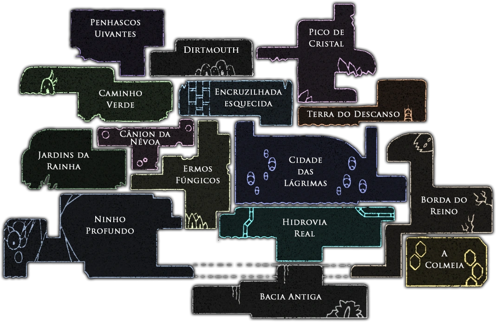

Logo
Menu
Home
Historia
Mecanica
Cidades
Contato

Cidades
Penhascos Uivantes;
Dirtmouth;
Pico de Cristal;
Verde;
Esquecida;
Terra do Descanso;
Jardins da Rainha;
Cânion da Névoa;
Ermos Fúngicos;
Cidade das Lágrimas;
Borda do Reino;
li>Ninho Profundo;
Hidrovia Real;
A Colmeia;
Bacia Antiga